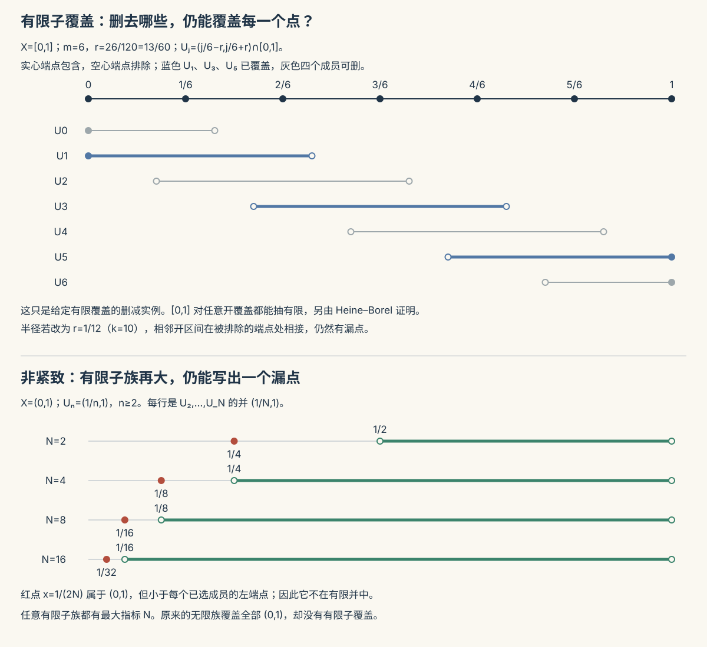

本页目录
拓扑 II · 紧致、连通与分离性
同胚不变量是拓扑的"指纹"。本页三枚最重要的指纹：紧致（"有限性"的拓扑化身——最值定理的真身）、连通（"一整块"——介值定理的真身）、分离性（空间的"分辨率"）。数分 I 的三大守护定理在此完成从 \(\mathbb{R}\) 到任意空间的加冕。
学习层：有限子覆盖、收敛子列与一条路不是一回事
1. 具身情境：给不同地图做“有限化”审计
想象五张地图：闭区间、开区间、拓扑学家正弦曲线的闭包、有理数子空间，以及序数空间 \([0,\omega_1)\)。审计员有三本不同的账：任意开覆盖能否抽出有限子覆盖？任意序列能否抽出在空间内收敛的子列？任意两点能否用一条连续路径接起来？同一张图上的“看起来有限”不能替代对应定义。
先预测当前实验模型的三个状态：
- 开覆盖紧致吗？
- 序列紧致吗？
- 连通是否已经足以推出路径连通？
2. 正式理论桥：先声明空间类别，再读证书
紧致的定义是任意开覆盖都有有限子覆盖；序列紧致的定义是每个序列都有在空间内收敛的子列。在度量空间中二者等价，但在一般拓扑空间中不能互换。闭区间的等价来自度量空间理论；\([0,\omega_1)\) 则是序列紧致而非开覆盖紧致的非度量边界例子。
连续像定理只需要源空间紧致：若 \(f:X\to Y\) 连续且 \(X\) 紧致，则 \(f(X)\) 紧致。它不要求 \(Y\) Hausdorff；若还要把紧子集说成闭集，则需要 \(Y\) Hausdorff。非紧源空间也可能有紧的连续像，但不能把这个偶然结果倒过来当定理。
连通只说不能拆成两个非空不交开集；路径连通要求每两点之间存在连续映射 \([0,1]\to X\)。路径连通推出连通，反向一般失败。闭正弦曲线是紧且连通却非路径连通；在 \(\mathbb R^n\) 的开连通子集上，连通与路径连通才重新等价。
JavaScript 失效时的静态读法：\([0,1]\) 与闭正弦曲线的闭包都是度量紧致，所以序列紧致也成立；\((0,1)\) 的开覆盖 \(U_n=(1/n,1)\) 没有有限子覆盖；\(\mathbb Q\cap[0,1]\) 不是紧致；\([0,\omega_1)\) 序列紧致但不是开覆盖紧致。
| 模型 | 开覆盖紧致 | 序列紧致 | 连通 / 路径连通 | 证书读法 |
|---|---|---|---|---|
| \([0,1]\) | 是 | 是 | 是 / 是 | Heine–Borel 与度量空间等价 |
| \((0,1)\) | 否 | 否 | 是 / 是 | \(U_n=(1/n,1)\) 是无有限子覆盖的开覆盖 |
| 闭正弦曲线 | 是 | 是 | 是 / 否 | 连通不推出路径连通 |
| \(\mathbb Q\cap[0,1]\) | 否 | 否 | 否 / 否 | 度量但不完备，序列可逼近空间外的无理数 |
| \([0,\omega_1)\) | 否 | 是 | 否 / 否 | 非度量空间中两种紧致性分离 |
3. 定理级结论与失败边界
- 紧致性边界：“闭且有界”是 \(\mathbb R^n\) 中的 Heine–Borel 判据，不是任意拓扑空间或任意度量空间的口号。
- 序列边界：在度量空间中可用序列刻画紧致；一般空间可能需要网或滤子，序列紧致不保证开覆盖紧致。
- 连续像边界：连续像保持紧致和连通；保持路径连通需要源空间路径连通，且不能把“像紧致”逆推成“源紧致”。
- 连通边界：路径连通是更强条件。正弦曲线的闭包提供连通而非路径连通的具体反例；“每点局部看起来像一块”也不能自动补上全局路径。

1. 紧致性
定义 \(X\) 紧致：任意开覆盖必有有限子覆盖。（把"无限"驯成"有限"的许可证——证明里的用法永远是：每点给一个局部性质的开邻域，紧致性抽出有限个，取 min/max 完成全局化。）
判据与例：Heine–Borel（\(\mathbb{R}^n\) 专属）：紧 \(\iff\) 有界闭（数分 I 有限覆盖定理的正名；⚠️ 无穷维失效——泛函 I 单位球的教训）；度量空间中紧 \(\iff\) 序列紧（每个序列都有在空间内收敛的子列）。Bolzano–Weierstrass 的“有界列有收敛子列”是 \(\mathbb{R}^n\) 的完备性与有限维性结论，不能脱离空间类别使用。
三条工作定理：
- 紧集的连续像紧（一行证：像的开覆盖拉回、抽有限、推回去）⇒ 最值定理：紧集上的连续实函数有界且取到最值——数分 I 版本的抽象真身，优化存在性的通用许可证；
- 紧空间的闭子集紧；Hausdorff 空间的紧子集闭（配对使用）；
- 免检同胚条款：紧空间到 Hausdorff 空间的连续双射自动是同胚（逆的连续性白送——上一页 \([0,2\pi) \to S^1\) 反例的病因就在 \([0, 2\pi)\) 不紧）。
Tychonoff 定理一嘴：任意多紧空间之积仍紧（泛函分析弱拓扑的幕后金主，知其名）。
2. 连通性
定义 \(X\) 连通：不能拆成两个非空不交开集之并。等价：既开又闭的子集只有 \(\varnothing\) 与 \(X\)。
基本盘：\(\mathbb{R}\) 的连通子集恰是区间（实数完备性的又一投影）；连通集的连续像连通 ⇒ 介值定理真身（连续函数把"一整块"映成"一整块"，\(\mathbb{R}\) 中的一整块是区间——介值不过是"区间没有洞"）。
道路连通：任两点有连续道路相连。道路连通 ⇒ 连通（反向一般不真——拓扑学家正弦曲线 \(\{(x, \sin\frac1x)\} \cup \{0\}\times[-1,1]\)：连通却无路可走的名反例）；\(\mathbb{R}^n\) 开集中两者等价。
用法一（区分空间的指纹）：\([0,1) \not\cong (0,1)\)——挖掉一点：前者可以剩连通（挖 0），后者必断两截；\(\mathbb{R} \not\cong \mathbb{R}^2\)——挖一点后前者断、后者仍连通。"挖点数连通片"是拓扑判非同胚的第一板斧。
用法二（连通性传播论证）："既开又闭 ⇒ 全局"——性质的成立点集若既开又闭且非空，则在连通空间上处处成立（数分 V 隐函数延拓、ODE 解的延拓背后的标准逻辑）。
3. 分离性（空间的分辨率）
递进的公理阶梯（认识 \(T_2\) 即可）：Hausdorff（\(T_2\)）：任两点可用不交开集分居。红利：极限唯一、紧集闭、对角线闭。度量空间全是 Hausdorff；商空间可能丢失（粘合粘过头）——这是商拓扑操作要当心的地方。更高层（正规空间）住着两条名定理：Urysohn 引理（不交闭集间存在连续分离函数——"拓扑空间上也能造光滑过渡"）与 Tietze 延拓定理（闭集上的连续函数可延拓到全空间）——知其名与用途。
度量化定理一嘴（Urysohn）：正则 + 第二可数 ⇒ 可度量化——"哪些拓扑空间其实偷偷是度量空间"的判据；流形都合格，所以微分几何不必操心这层。
4. 收官视野：不变量的阶梯
点集拓扑给出的同胚不变量（紧、连通、分离性、可数性）分辨率有限——球面与环面它区分不了（都紧、连通、Hausdorff）。下一层楼是代数拓扑：给空间配代数对象（基本群 \(\pi_1\) 数"洞"：球面平凡、环面 \(\mathbb{Z}^2\)；同调群——TDA 持续同调的理论引擎），用群的不同判空间不同（抽代 I 的群在此成为几何的度量衡）。本科到此了望即可；但"造不变量来分类"这一方法论——高代的秩与特征值、解几的惯性指数、拓扑的连通片与洞——已是你在本站第四次见到，它就是现代数学的中央战略。
5. 典型例题
例 1（紧致性论证模板） 证明紧度量空间上连续函数一致连续（数分 I Cantor 定理的拓扑版）：由连续性为每点选取控制函数振荡的邻域，这些邻域构成开覆盖；紧致性给出有限子覆盖，再由 Lebesgue 数引理取得一个统一的 \(\lambda>0\)——"局部 ⇒ 全局"的标准三步。这里不能只取各点半径的最小值，因为靠近某个球边界的两点未必同时落在那只球里。
例 2（连通性判非同胚） \(S^1 \not\cong [0,1]\)：挖一点，圆仍连通、区间（挖内点）断——不同胚。（顺带：圆也不同胚于任何区间——闭区间挖端点仍连通？那就挖两点：圆断两截、\([0,1]\) 挖两内点断三截。指纹要挑对下手处。）
例 3（Hausdorff 失守的商） 把 \(\mathbb{R}\) 中"\(x \sim y \iff x - y \in \mathbb{Q}\)"作商：商空间只有平庸拓扑（任何非空开集的原像稠密）——连 \(T_1\) 都不是。商拓扑是强力机床，出品需质检分离性。（这个商集正是实变 I Vitali 集的选点舞台——两页在此暗通。）\(\blacksquare\)
拓扑两页完工。代数几何线还剩最后一门：微分几何——给弯曲的空间装上微积分。